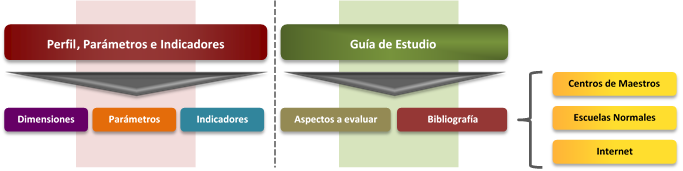

<div class="row">
    <div class="col-md-12">
        <h2>Estrategias y sugerencias para preparar el Concurso de Oposición</h2>
        <p>El Concurso de Oposición para el Ingreso al servicio público educativo requiere ser preparado con esmero por parte de los aspirantes, el propósito de estas sugerencias es apoyarlos en dicha tarea. Asimismo, se ofrece la referencia de diversos recursos que, empleados metódicamente, contribuirán a afianzar los conocimientos y habilidades indispensables para resolver con éxito el examen de oposición.</p>
        <h3>Materiales de apoyo para el estudio</h3>
        <p>Los aspirantes cuentan para su preparación con los siguientes materiales de apoyo para el estudio elaborados por la Secretaría de Educación Pública, los cuales pueden consultarse en este sitio:</p>
        <ul>
            <li class="li-none">a) <em>Perfil</em>, parámetros e indicadores.</li>
            <li class="li-none">b) <em>Guía de estudio</em>, específica para cada nivel educativo, modalidad, tipo de servicio o asignatura.</li>
            <li class="li-none">c) Bibliografía y otros materiales de consulta en formato electrónico (PDF) que forman parte de los documentos oficiales de la SEP y de los Libros de la colección Biblioteca para la Actualización del Maestro y la colección Biblioteca del Normalista. Éstos están disponibles además en las bibliotecas de Centros de Maestros y Escuelas Normales públicas del país.</li>
        </ul>
        <h3>La relación entre los materiales de apoyo para el estudio</h3>
        <p>El <em>Perfil</em>, <em>parámetros e indicadores</em> es el documento que expresa las características, aptitudes y conocimientos deseables de docentes y técnicos docentes de educación básica para el desempeño de sus funciones y, fundamentalmente, para asegurar el máximo logro educativo del alumnado. Asimismo, es un referente para el estudio personal, la autoformación, la formación continua, el diseño de programas de desarrollo profesional y la evaluación docente. En el Perfil los aspirantes podrán identificar con precisión las dimensiones, parámetros e indicadores que serán objeto de evaluación, para ello, es necesario que analicen cada uno de estos elementos para comprender su sentido general y específico. </p>
        <p>La bibliografía básica seleccionada se vincula con cada uno de los parámetros e indicadores del Perfil y con los aspectos a evaluar contenidos en esta <em>Guía de estudio</em>. De tal manera que Perfil (parámetros e indicadores), bibliografía y aspectos a evaluar son elementos relacionados e imprescindibles para el estudio y la preparación integral del examen.</p>
        <h3>La bibliografía básica para el estudio</h3>
        <p>Como se ha dicho, la bibliografía básica para el estudio ha sido seleccionada con la finalidad de que todos los parámetros e indicadores del Perfil cuenten con referentes para el estudio. Los recursos bibliográficos son de diversa índole, hay referencias de tipo normativo, como planes y programas de estudio y acuerdos secretariales, pero también estudios de corte académico. En conjunto, la bibliografía aporta elementos prácticos y teóricos (experiencias, información, conceptos, tesis, explicaciones) relacionados con los parámetros, indicadores y aspectos a evaluar, lo cual constituye un insumo fundamental para la preparación de los aspirantes.</p>
        
        <h3>Recomendaciones para el estudio</h3>
        <h3>Sesiones de estudio</h3>
        <ul>
            <li class="li-none">1.	Programe las sesiones de estudio. Realice un calendario personal para distribuir los aspectos a evaluar entre el tiempo disponible para su estudio. </li>
            <li class="li-none">2.	Defina el objetivo de cada sesión de estudio y establezca el tiempo que dedicará a cada una según sus ocupaciones personales.</li>
            <li class="li-none">3.	Dedique más tiempo de estudio a los temas que considere su mayor debilidad o preocupación.</li>
            <li class="li-none">4.	De preferencia, estudie en un lugar cómodo, iluminado, ventilado, con temperatura adecuada y libre de  distracciones.</li>
            <li class="li-none">5.	Repase las veces que sea necesario notas, resúmenes y esquemas con la finalidad de afianzar sus conocimientos.</li>
            <li class="li-none">6.	Estudie con tiempo, dejar todo para el final provoca estrés e impide la concentración adecuada.</li>
        </ul>
        <h3>Cómo aprovechar la bibliografía básica para el estudio</h3>
        <ul>
            <li class="li-none">1.	<strong>Compilar la bibliografía.</strong> Reúna la bibliografía y los materiales de consulta sugeridos, ya sea que sea en formato electrónico o impreso.</li>
            <li class="li-none">2.	<strong>Leer para comprender.</strong> Con base en su programación lea gradualmente los materiales de estudio, para ello realice ejercicios de predicción a partir de títulos y subtítulos de libros y capítulos; fije el objetivo de cada lectura, por ejemplo, identificar los aspectos fundamentales de los procesos de desarrollo infantil, explicar la influencia del entorno familiar y sociocultural en el aprendizaje de los alumnos, etcétera; subraye las ideas principales y secundarias del texto; relacione las ideas principales de modo que pueda construir un texto coherente con continuidad lógica; realice ejercicios para expresar con pocas palabras lo sustancial del texto; identifique y defina conceptos clave. Es importante que siempre realice este tipo de actividades con el propósito de comprender el contenido de los textos.</li>
            <li class="li-none">3.	<strong>Conocimientos previos.</strong> Cuando estudie utilice sus conocimientos previos, relacione la información nueva con lo que ya sabe. Esto facilitará la adquisición, asimilación y comprensión de nuevos conocimientos.</li>
            <li class="li-none">4.	<strong>Esquemas organizadores de texto.</strong> Elabore esquemas (cuadros sinópticos, mapas mentales y conceptuales, cuadros comparativos, etcétera) sobre el contenido de los materiales de lectura. Esta técnica permite organizar la información y expresarla sintéticamente de forma clara y sencilla, además hace posible el repaso rápido de los temas de estudio.</li>
            <li class="li-none">5.	<strong>Preguntas y respuestas.</strong> Escriba preguntas y respuestas que ayuden a mejorar la comprensión del texto, o escriba preguntas para las que no tiene respuestas y búsquelas releyendo los textos. </li>
            <li class="li-none">6.	<strong>Estudio en grupo.</strong> Esta modalidad de estudio tiene la ventaja de trabajar en colaboración, lo cual resulta muy formativo: se comparten materiales, se despejan dudas mediante el análisis y la discusión colectiva, se resuelven problemas y realizan ejercicios en común. La comparación de diferentes puntos de vista estimula la actividad metacognitiva de las personas, lo cual repercute en la mejora de sus conocimientos.</li>
        </ul>
        <h3>La aplicación del examen</h3>
        <ul>
            <li class="li-none">1.	Como se ha indicado antes, el examen que usted presentará será un instrumento estandarizado de opción múltiple, con cuatro opciones de respuesta donde sólo una es la correcta.</li>
            <li class="li-none">2.	Estime el tiempo que necesitará para resolver todos los reactivos del examen. Distribuya el tiempo disponible entre el número de reactivos. Considere que algunos los responderá más rápido que otros.</li>
            <li class="li-none">3.	Lea detenidamente las preguntas y asegúrese que las ha comprendido bien.</li>
            <li class="li-none">4.	Antes de responder, asegúrese de entender el sentido del enunciado de cada pregunta (afirmativo, negativo, interrogativo, imperativo).</li>
            <li class="li-none">5.	Analice cada una de las posibles respuestas, argumente mentalmente por qué una opción puede ser o no la correcta. Recuerde que en ocasiones un detalle hace la diferencia entre la respuesta correcta y las incorrectas. </li>
            <li class="li-none">6.	Si no sabe la respuesta a una pregunta no se entretenga demasiado en ella. Pase a las siguientes y al final vuelva a ella.</li>
            <li class="li-none">7.	Cuando finalice el examen asegúrese de haber respondido todos los reactivos.</li>
            <li class="li-none">8.	Atienda las indicaciones que dé el aplicador del instrumento. Él le proporcionará información sobre el inicio y el término del examen, así como del proceso en su conjunto. Respete los horarios establecidos por la convocatoria para la aplicación de los instrumentos.</li>
        </ul>
        <h2>1.	Recomendaciones generales</h2>
        <h3>Antes del día de la aplicación</h3>
        <ul>
            <li class="li-none">•       Leer con atención la convocatoria del concurso que emita la autoridad educativa local; en ella se podrán conocer aspectos fundamentales del proceso de evaluación, como: plazas sujetas a concurso, requisitos para participar, etapas, aspectos y métodos de la evaluación, resultados, criterios para la asignación de plazas, entre otros elementos de interés para los sustentantes.</li>
            <li class="li-none">•	Visitar con antelación la sede de aplicación con la finalidad de conocer su ubicación precisa y prever factores de riesgo que impidan llegar a tiempo. </li>
            <li class="li-none">•	Estudiar con el mayor tiempo de anticipación posible los aspectos a evaluar y la bibliografía básica sugerida.</li>
            <li class="li-none">•	Descansar los días previos al examen.</li>
        </ul>
        <h3>El día de la aplicación</h3>
        <ul>
            <li class="li-none">•	Ingerir alimentos saludables, ligeros y suficientes.</li>
            <li class="li-none">•	Usar ropa cómoda.</li>
            <li class="li-none">•	Portar ficha de examen y una identificación oficial vigente con fotografía (credencial de elector, cédula profesional, pasaporte). Si no se presenta la ficha de examen no podrá realizarse la evaluación.</li>
            <li class="li-none">•	 Llegar con una hora de anticipación a la sede de aplicación. Cerrada la puerta de acceso al plantel, por ningún motivo se permitirá entrar a los sustentantes con retardo.</li>
            <li class="li-none">•	Leer con atención las indicaciones para el sustentante que se encontrarán en la puerta de acceso o en un lugar visible de la sede.</li>
            <li class="li-none">•	Durante la aplicación del examen no se permitirá el uso de libros, materiales impresos y dispositivos electrónicos y de comunicación.</li>
            <li class="li-none">•	Conservar la calma en caso de que se presente alguna contingencia que demore el inicio de la aplicación del examen ya que se repondrá el tiempo de retraso para cumplir con lo establecido en la convocatoria.</li>
            <li class="li-none">•	Informar al coordinador de sede cuando el sustentante presente alguna discapacidad (motriz, debilidad visual severa, ceguera) para que se le otorgue el apoyo y las  condiciones adecuadas que requiera.</li>
        </ul>
    </div>
</div>